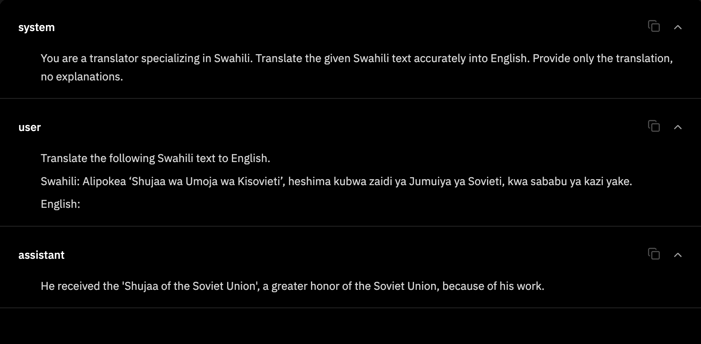
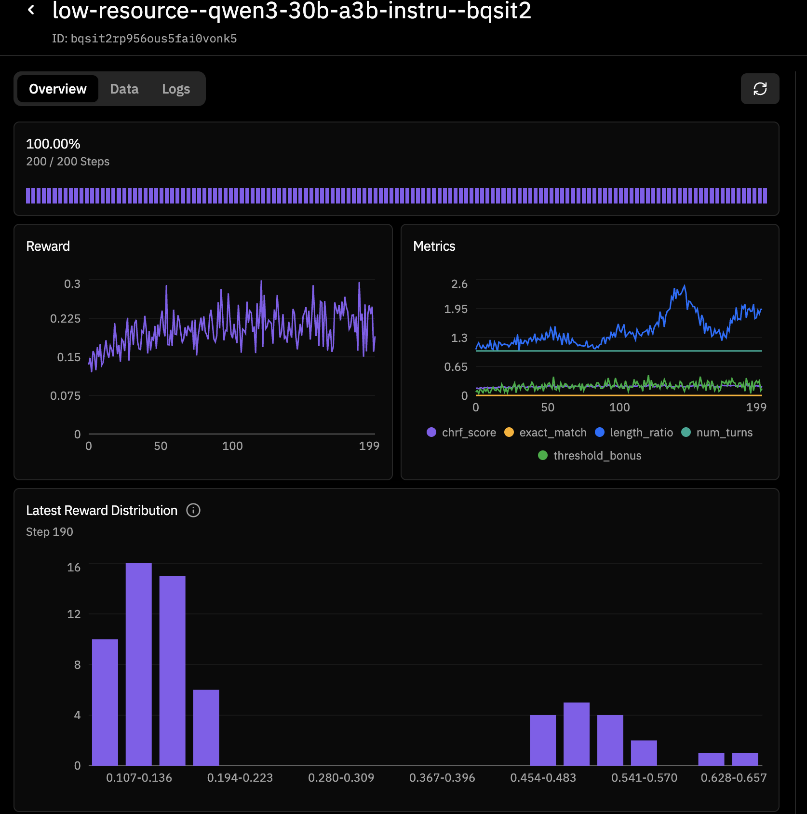
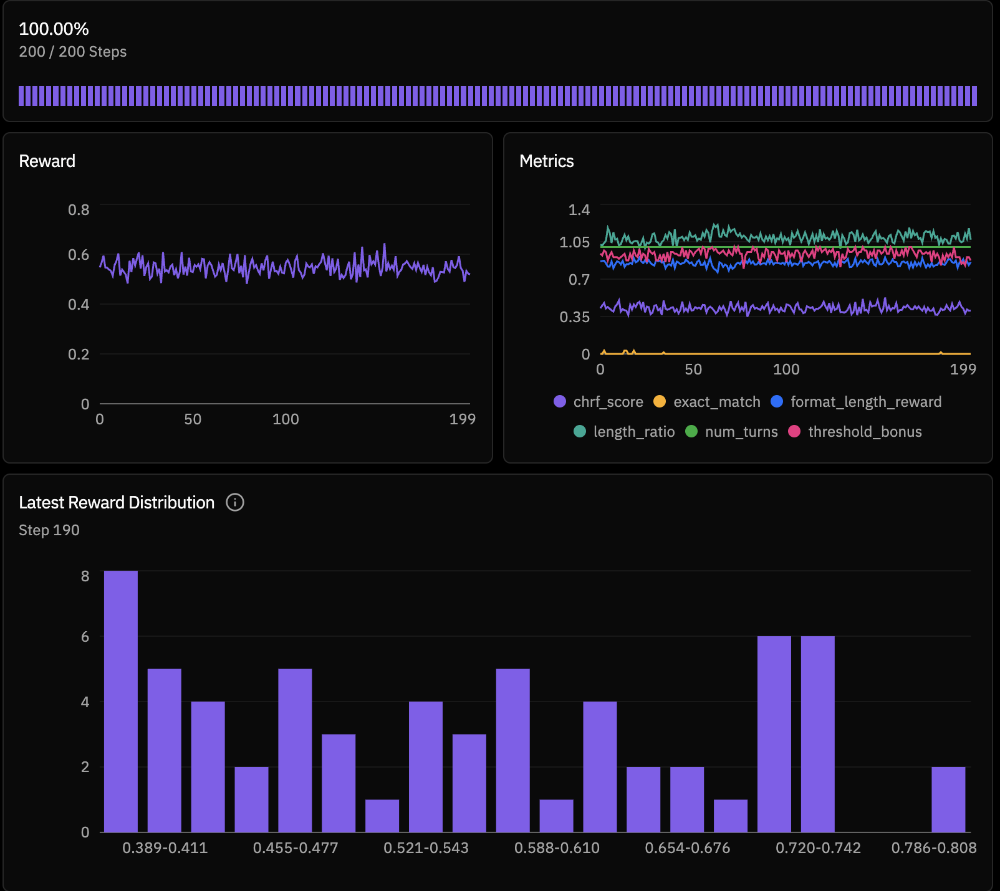

From ~0.15 to ~0.60 Reward: Fast RL Gains on Low-Resource Translation
A handful of practical changes, curriculum, reward shaping, and decoding stability, roughly quadrupled reward on a low-resource translation task, no architecture overhaul required.
Low-resource language translation is one of the clearest places where modern LLMs still underperform. For many communities, that gap is not academic: it affects access to information, education, and public services.
In this project, we built a low-resource translation environment with Prime Intellect Verifiers and trained on Hosted Training. The interesting part: we got a large reward jump with a handful of practical changes, not a huge architecture overhaul.
Why this problem matters
Pretraining data skews to high-resource languages, leaving a quality cliff for the rest.
Most model pretraining data is heavily skewed toward high-resource languages. That creates a quality cliff for low-resource languages like Yoruba, Swahili, and Welsh, especially for faithful translation under strict format constraints.
We wanted a setup that is measurable, reproducible, and easy to iterate on in RL.
Environment (Verifiers + Hosted Training)
A custom Verifiers env with a dense, practical reward rubric over FLORES-200.
We implemented a custom Verifiers environment: low-resource-translation.
Environment link: Prime Intellect Environment Dashboard
Environment reward rubric (dense + practical):
rubric = vf.Rubric(
funcs=[chrf_score, threshold_bonus, format_length_reward],
weights=[0.85, 0.15, 0.05],
)
Dataset
- FLORES-200 sentence files
- English-pivoted translation directions:
- from_english (English → low-resource)
- to_english (low-resource → English)
The implementation detail that mattered
The FLORES loader breaks on datasets==4.x; a script-free loader fixed stability.
The Hugging Face facebook/flores loader script is not compatible with datasets==4.x script-loading behavior. So we moved to a script-free loader path: direct FLORES sentence files + caching. That made training and eval stable in our runtime.
Reward design
Three pieces: a dense chrF signal, a threshold bonus, and a small format/length term.
We designed reward signals with three simple pieces:
- chrf_score: dense continuous translation-quality signal.
- threshold_bonus: extra reward when output crosses a target quality bar.
- format_length_reward: small auxiliary term to discourage rambling and formatting drift.
We also keep metrics like length_ratio, exact_match, and num_turns for diagnosis.
Model and training config
Qwen3-30B-A3B-Instruct, 200 steps, batch 64, two rollouts per example.
model = "Qwen/Qwen3-30B-A3B-Instruct-2507"
max_steps = 200
batch_size = 64
rollouts_per_example = 2
# max_async_level = 1
# learning_rate = 5e-5
# lora_alpha = 16
# env_file = ["secrets.env"]
Baseline: reward moved ~0.15 → ~0.30
It learns, but noisy: broad reward spread and many low-quality outputs.
In the first run, reward started near 0.15 and trended up to roughly 0.30 by the end of training. That was a good “it learns” signal, but still noisy, with broad reward spread and many low-quality outputs.


After small tweaks: reward stabilized ~0.59–0.60
Reward shifted up and clustered tightly around 0.59–0.60.
After targeted changes, the second run shifted reward upward and much more consistently, with values clustering around 0.59–0.60 (and occasional higher bins).

The tweaks that moved reward quickly
Curriculum, a denser reward, a lower early threshold, and stable decoding.
- Start with an easier curriculum: train direction="to_english" first (Yoruba/Swahili), then add from_english. This gives a cleaner supervision signal early and improves stability.
- Make reward denser: shifted from sparse-ish weighting to a more continuous emphasis, 0.7/0.3 → 0.85/0.15 (chrf_score / threshold_bonus), plus a small format/length auxiliary reward.
- Lower the threshold initially: chrf_threshold from 0.25 down to 0.18–0.22 for early learning, raised later once the model stabilizes.
- Stabilize decoding: low temperature (~0.2) and tighter max tokens (128–192). This reduced noisy outputs and improved reward consistency.
- Reward output hygiene: the format/length reward helped reduce rambling and keep outputs closer to clean translation form.
What we learned
Small reward-shaping and curriculum changes dominate early RL gains.
- Small reward-shaping and curriculum changes can dominate early RL gains.
- Direction matters: to_english is often an easier starting curriculum.
- Output discipline matters: decoding + format reward can materially improve training-signal quality.
- Infrastructure details matter too: data-loading compatibility can be the hidden blocker before model quality.